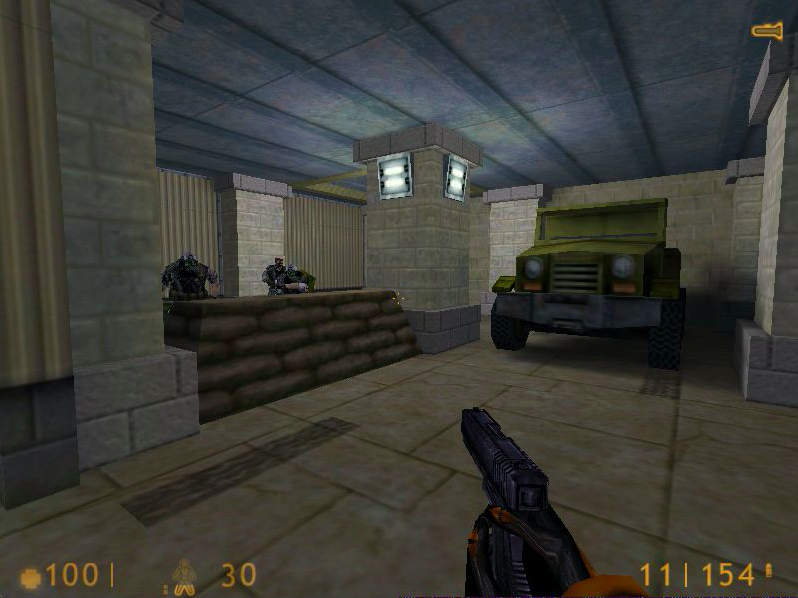

Old video games created in the early and mid 2000s were some of the pioneering games that sparked the interest of many enthustiast's around the world. With the incline in graphic simulations, people tend to look back at some of the old games and they ask themselve's if such improvements could be done to their childhood games. For that purpose our team plans to integrate improved graphics for one of our childhood games.
Most old games become unplayable due to the lack of graphics displayed on screen. Such games include Left 4 Dead, Half Life, Portal, and The Sims. Our team strives to better the graphics of one of these four games by updating some of the textures from the in game scenes. This can be done through the use of shading tools or by creating new textures and updating them accordingly to the games scenery. We see an example image below that the scenery could be improved by updating the surrounding.
|

|
It is important to us that we generate new graphics for one of these games because we grew up playing them and we would like to replay one of them with updated graphics. The challenge seen ahead of this journey will be acquiring the correct tools to start modding one of these games, learning how to use blender or any other tool if we plan on updating some of the texture by recreating them, or learning how to shade these textures in terms of the lighting effects. To our team this is completey new to us and we believe that we can achieve our goal by integrating the the parts above. We would like to render in real time if we become knowledgeable on the topic before the due date.
Since we plan on rendering scenery that have better quality graphics then the original video game we will show side by side images of before and after environments. The minecraft mod shader should significantly show the difference in renders for one of these old games. We would like to present footage of the game that walks throught the diffenet objects in space and portrays the new modified graphics for a thrilling throwback experience. The quality should be measured through the accuracy of the images. Whether our new modified scenery is extremely different from the original scenery. What our group plans on delivering is a complete modified game scenery with new texture updates and shaders. In order to achieve this we must accomplish learning how to use the shader mod from minecraft to integrate this into the game, learning how to use blenfer to create better visuals, and knowing how to begin to integrate everything together. If everything goes great what we hope to deliver is a fully replayable game with the path-traced visual mods integrated into the old game.
WEEK ONE:
For starters we will be looking into the Steam community for any tips on mods for games. We will also look at the Nvidia webpage link provided to us. This is really new to us so we are trying to figure out the direction for our course of action.